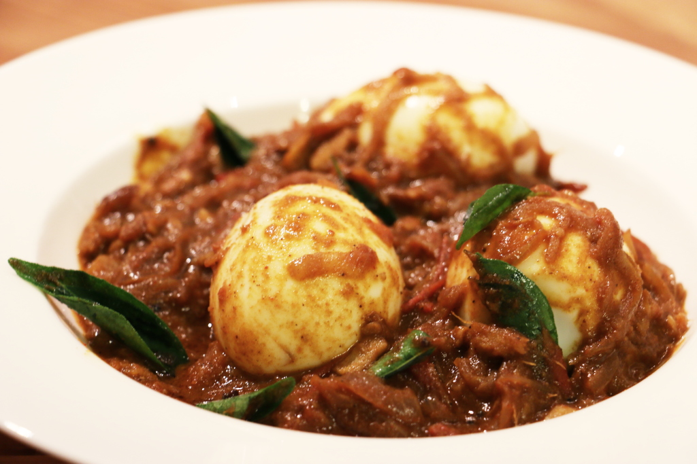

Egg Curry

Description
Egg curry is a simple yet flavorful dish popular across many Indian households. It combines boiled eggs with a spiced tomato and onion gravy that is both comforting and satisfying. The dish is hearty enough to serve with rice, roti, or naan, making it versatile for lunch or dinner.
This recipe uses basic pantry spices to create a rich, aromatic curry without being overly complex. It is perfect for busy weeknights when you need a quick, protein-rich meal that still feels homemade and wholesome.
Ingredients
- 4–6 boiled eggs
- 2 medium onions, finely chopped
- 2 medium tomatoes, pureed or finely chopped
- 2 green chilies, slit
- 1 tablespoon ginger-garlic paste
- 2–3 tablespoons cooking oil
- 1 teaspoon cumin seeds
- 1 teaspoon turmeric powder
- 1 teaspoon red chili powder
- 2 teaspoons coriander powder
- 1 teaspoon garam masala
- 1 teaspoon cumin powder
- Fresh coriander leaves for garnish
- Salt to taste
- 1–2 cups water (adjust for gravy consistency)
Steps
- Boil the eggs, peel them, and keep aside.
- Heat oil in a pan, add cumin seeds, and let them splutter.
- Add chopped onions and sauté until golden brown.
- Stir in ginger-garlic paste and green chilies, cook until raw smell goes away.
- Add tomato puree and cook until oil separates.
- Mix in turmeric, red chili powder, coriander powder, cumin powder, and salt. Cook the masala for a few minutes.
- Add water to adjust consistency and bring the curry to a boil.
- Gently add the boiled eggs and simmer for 5–7 minutes.
- Sprinkle garam masala and garnish with fresh coriander leaves.
- Serve hot with rice, roti, or naan.
For other recipes, go toHomepage